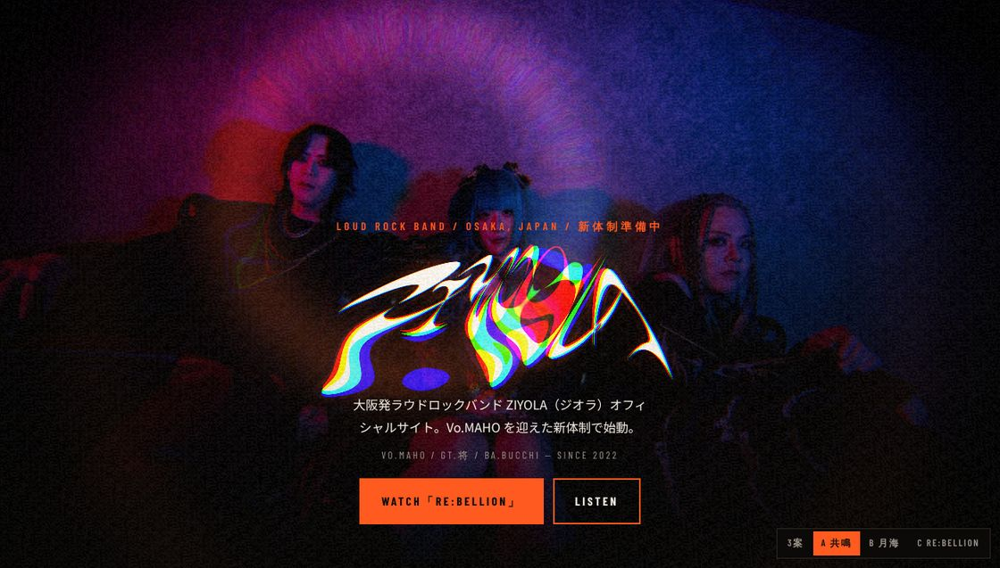
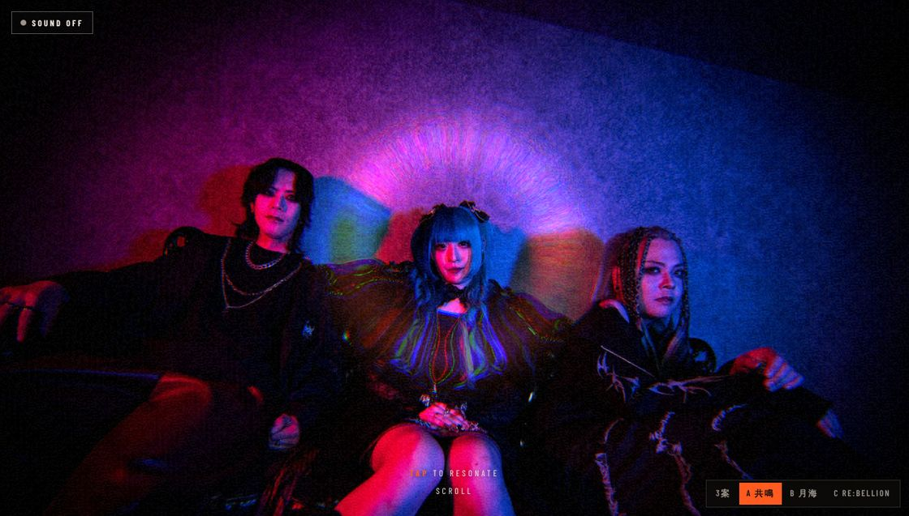
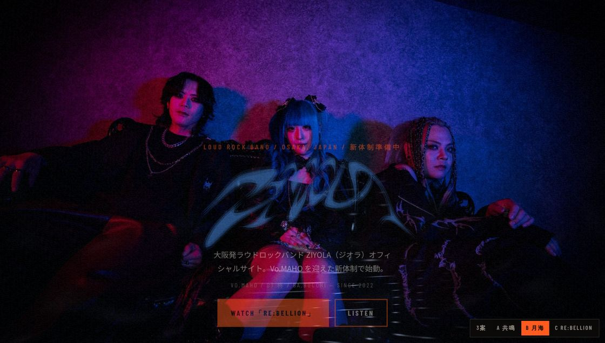
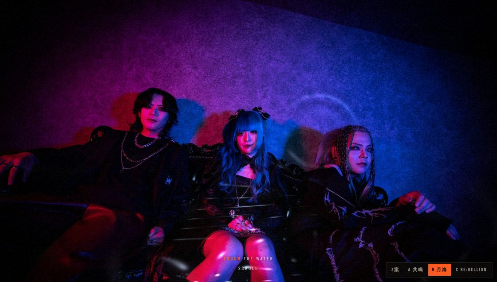
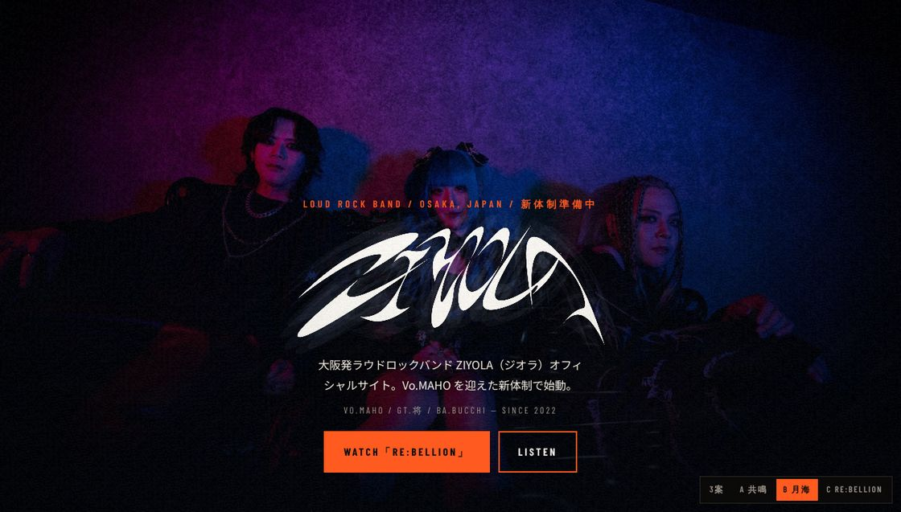
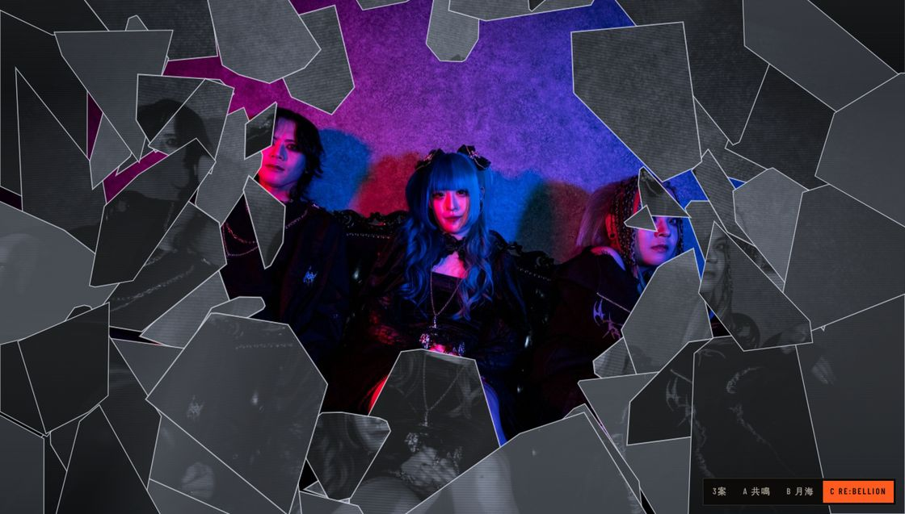
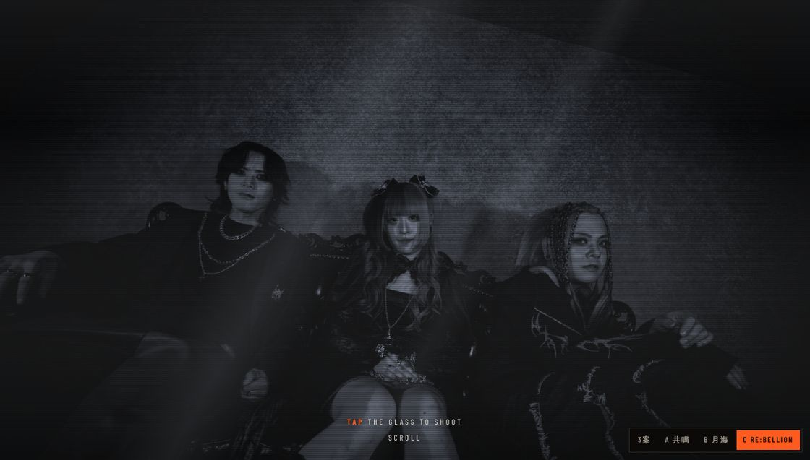
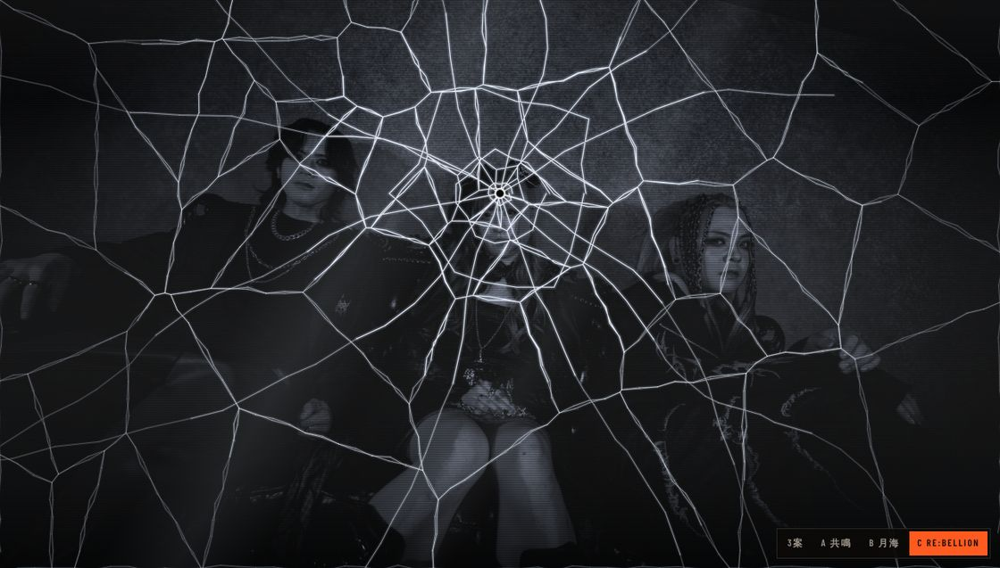

<title>ZIYOLA ヒーロー3案</title>
<meta name="claude:viewport-fit-sides" content="cover">
<link rel="stylesheet" href="https://fonts.googleapis.com/css2?family=Anton&family=Barlow+Condensed:wght@400;600;700&family=Noto+Sans+JP:wght@400;500;700;900&display=swap">
<style>
/* Layout concept: a pitch sheet in the site's own stage-black. Each plan is a full-bleed band (stills left, spec right), closing on a ◎○△ scorecard the way a Japanese proposal would. */
:root{
  --bg:#0b0a09;
  --bg-2:#141210;
  --bg-3:#1d1a17;
  --fg:#efe9df;
  --fg-dim:#a39a90;
  --line:#2c2823;
  --accent:#ff5a1f;
  --moon:#a9c2ff;
  --display:'Anton','Impact','Arial Narrow Bold',sans-serif;
  --body:'Noto Sans JP','Hiragino Sans','Yu Gothic',sans-serif;
  --util:'Barlow Condensed','Arial Narrow',sans-serif;
  color-scheme:dark;
}
*{box-sizing:border-box}
body{margin:0;background:var(--bg);color:var(--fg);font-family:var(--body);font-size:15px;line-height:1.85;-webkit-font-smoothing:antialiased;overflow-x:hidden}
a{color:inherit}
img{max-width:100%;display:block}
h1,h2,h3{margin:0;line-height:1;text-wrap:balance}
:focus-visible{outline:2px solid var(--accent);outline-offset:3px}
.in{max-width:1180px;margin:0 auto;padding-left:max(16px,env(safe-area-inset-left,0px));padding-right:max(16px,env(safe-area-inset-right,0px))}
.label{font-family:var(--util);font-weight:600;letter-spacing:.26em;text-transform:uppercase;font-size:13px;color:var(--accent)}

header{padding-block:64px 48px;border-bottom:1px solid var(--line)}
header .in{display:grid;gap:20px}
header h1{font-family:var(--display);font-size:clamp(56px,11vw,128px);letter-spacing:.02em;text-transform:uppercase;line-height:.88}
header h1 span{color:var(--accent)}
header p{margin:0;max-width:60ch;color:var(--fg-dim)}
header p strong{color:var(--fg);font-weight:700}
.jump{display:flex;flex-wrap:wrap;gap:10px;margin-top:8px}
.jump a{font-family:var(--util);font-weight:700;letter-spacing:.16em;text-transform:uppercase;font-size:14px;text-decoration:none;border:1px solid var(--line);padding:8px 14px;color:var(--fg)}
.jump a:hover{border-color:var(--accent);color:var(--accent)}

.plan{padding-block:64px;border-bottom:1px solid var(--line)}
.plan:nth-of-type(even){background:var(--bg-2)}
.plan .in{display:grid;grid-template-columns:minmax(0,1.25fr) minmax(0,1fr);gap:40px;align-items:start}
@media(max-width:900px){.plan .in{grid-template-columns:minmax(0,1fr)}}
.stills{display:grid;gap:10px}
.stills figure{margin:0;display:grid;gap:6px}
.stills img{border:1px solid var(--line);aspect-ratio:16/10;object-fit:cover;width:100%}
.stills figcaption{font-family:var(--util);letter-spacing:.14em;font-size:13px;color:var(--fg-dim);text-transform:uppercase}
.stills .pair{display:grid;grid-template-columns:1fr 1fr;gap:10px}
.spec{display:grid;gap:22px;min-width:0}
.head{display:grid;gap:10px}
.letter{font-family:var(--display);font-size:20px;letter-spacing:.1em;width:44px;height:44px;display:grid;place-items:center;background:var(--accent);color:var(--bg)}
.head h2{font-family:var(--display);font-size:clamp(44px,6vw,72px);letter-spacing:.03em;line-height:.95}
.head h2 small{display:block;font-family:var(--util);font-weight:600;font-size:15px;letter-spacing:.3em;color:var(--fg-dim);margin-top:10px;text-transform:uppercase}
.src{font-family:var(--util);letter-spacing:.12em;font-size:14px;color:var(--fg-dim)}
.src b{color:var(--fg);font-weight:600}
.why{margin:0;font-size:16px;line-height:1.9}
.flow{list-style:none;margin:0;padding:0;border-top:1px solid var(--line)}
.flow li{display:grid;grid-template-columns:96px minmax(0,1fr);gap:14px;padding:12px 0;border-bottom:1px solid var(--line);font-size:14px}
.flow li span{font-family:var(--util);font-weight:600;letter-spacing:.16em;color:var(--fg-dim);font-size:13px;text-transform:uppercase;padding-top:1px}
.note{margin:0;font-size:13px;color:var(--fg-dim);border-left:2px solid var(--line);padding-left:12px}
.open{justify-self:start;font-family:var(--util);font-weight:700;letter-spacing:.2em;text-transform:uppercase;font-size:15px;padding:14px 26px;text-decoration:none;background:var(--accent);color:var(--bg);border:2px solid var(--accent)}
.open:hover{background:transparent;color:var(--accent)}

.verdict{padding-block:72px}
.verdict .in{display:grid;gap:32px}
.verdict h2{font-family:var(--display);font-size:clamp(44px,8vw,88px);letter-spacing:.04em;text-transform:uppercase;line-height:.9}
.tbl{overflow-x:auto;border:1px solid var(--line)}
table{border-collapse:collapse;width:100%;min-width:620px;font-size:14px}
th,td{padding:12px 14px;border-bottom:1px solid var(--line);text-align:left;vertical-align:top}
thead th{font-family:var(--util);letter-spacing:.18em;text-transform:uppercase;font-size:13px;color:var(--fg-dim);font-weight:600;background:var(--bg-2)}
tbody th{font-weight:500;color:var(--fg-dim);width:30%}
td .m{font-size:18px;font-weight:900;margin-right:8px;color:var(--fg)}
td .m.best{color:var(--accent)}
td small{color:var(--fg-dim);font-size:12px}
tr.rec td:nth-child(4){background:rgba(255,90,31,.07)}
.pick{display:grid;grid-template-columns:auto minmax(0,1fr);gap:24px;align-items:start;border:2px solid var(--accent);padding:28px}
@media(max-width:640px){.pick{grid-template-columns:minmax(0,1fr)}}
.pick .big{font-family:var(--display);font-size:96px;line-height:.8;color:var(--accent)}
.pick h3{font-size:20px;font-weight:900;line-height:1.4;margin-bottom:10px}
.pick p{margin:0 0 10px;max-width:64ch}
.pick p:last-child{margin-bottom:0;color:var(--fg-dim);font-size:14px}
.common{display:grid;gap:8px;color:var(--fg-dim);font-size:14px;margin:0;padding-left:1.2em}
footer{padding-block:32px 48px;border-top:1px solid var(--line);font-family:var(--util);letter-spacing:.14em;font-size:13px;color:var(--fg-dim)}
</style>

<header>
  <div class="in">
    <div class="label">ZIYOLA Official Site / Hero Proposal</div>
    <h1>Hero <span>3</span> Plans</h1>
    <p>トップページを開いて最初の数秒で、ZIYOLAの音と世界観が伝わる仕掛けを3つ作りました。<strong>3案とも、ZIYOLA自身のリリース作品をネタにしています。</strong>どれも実際に動くデモです。スクロールとタップを試してから選んでください。</p>
    <nav class="jump" aria-label="案へ移動"><a href="#a">A 共鳴</a><a href="#b">B 月海</a><a href="#c">C RE:bellion</a><a href="#verdict">比較とおすすめ</a></nav>
  </div>
</header>

<section class="plan" id="a">
  <div class="in">
    <div class="stills">
      <figure><figcaption>ロゴ着地後、タップ直後の一撃</figcaption></figure>
      <figure><figcaption>開いた直後、写真をタップ</figcaption></figure>
    </div>
    <div class="spec">
      <div class="head"><div class="letter">A</div><h2>共鳴<small>Resonance</small></h2></div>
      <div class="src">元ネタ：<b>1st Single「共鳴」</b> 2022.01.07</div>
      <p class="why">見る人がタップするたびに、画面が「鳴る」。ライブハウスで低音が体に響くあの感覚を、トップページで再現します。ラウドロックの音圧を目に見える形にする案です。</p>
      <ul class="flow">
        <li><span>開いた瞬間</span><div>アー写が鼓動のように約1.3秒ごとに脈打つ。フィルムのざらつき。</div></li>
        <li><span>タップ</span><div>触った位置から衝撃波が広がり、写真が押し出されて色がずれる。ドラッグで連打できる。</div></li>
        <li><span>Sound on</span><div>左上のボタンをONにすると、タップごとにキックと低音弦のブリッジミュート（「ジャッ」）が鳴る。音はブラウザ内で合成するので、音源ファイルは不要。</div></li>
        <li><span>スクロール</span><div>暗転してロゴが着地した瞬間に大きな一撃。ロゴがRGBに裂けて揺れる。</div></li>
      </ul>
      <p class="note">音は最初OFFです（ブラウザの決まりで、音の自動再生はできません）。写真が歪むのは衝撃波が通り過ぎる一瞬だけです。</p>
      <a class="open" href="resonance.html">デモを開く →</a>
    </div>
  </div>
</section>

<section class="plan" id="b">
  <div class="in">
    <div class="stills">
      <figure><figcaption>スクロール途中：ロゴはまだ水の底</figcaption></figure>
      <div class="pair">
        <figure><figcaption>開いた直後：月光と波紋</figcaption></figure>
        <figure><figcaption>浮上したロゴ</figcaption></figure>
      </div>
    </div>
    <div class="spec">
      <div class="head"><div class="letter">B</div><h2>月海<small>Tsukiumi</small></h2></div>
      <div class="src">元ネタ：<b>2nd Single「月海」</b>（c/w「冥海」）2022.06.29</div>
      <p class="why">トップ全体を、月の光が差す夜の海に見立てる案です。ZIYOLAのロゴは液体のような筆致なので、水との相性が抜群です。水の底に沈んでいたロゴが浮かび上がる流れで、新体制での再始動を表します。</p>
      <ul class="flow">
        <li><span>開いた瞬間</span><div>写真がゆっくり揺らぐ。下半分に月光の帯がきらめき、ときどき雫が落ちて波紋が広がる。</div></li>
        <li><span>なぞる</span><div>カーソルや指の跡に波紋が残る。月光の帯がカーソルの方へゆっくり寄ってくる。</div></li>
        <li><span>スクロール</span><div>海が深い紺に沈む。ロゴは青くにじんで揺らぐ状態から少しずつ輪郭を取り戻し、水面を割った瞬間に大きな波紋が出る。</div></li>
      </ul>
      <p class="note">3案の中で一番静かな案です。派手さよりも世界観と余韻を重視しています。</p>
      <a class="open" href="tsukiumi.html">デモを開く →</a>
    </div>
  </div>
</section>

<section class="plan" id="c">
  <div class="in">
    <div class="stills">
      <figure><figcaption>砕けた瞬間：モノクロの破片の向こうにカラーの3人</figcaption></figure>
      <div class="pair">
        <figure><figcaption>開いた直後：ガラス越しのモノクロ</figcaption></figure>
        <figure><figcaption>着弾 → ヒビが走る</figcaption></figure>
      </div>
    </div>
    <div class="spec">
      <div class="head"><div class="letter">C</div><h2>RE:bellion<small>Shatter</small></h2></div>
      <div class="src">元ネタ：<b>3rd Single「RE:bellion」のジャケット</b>（弾丸・割れたガラス・青い光）2025.01.12</div>
      <p class="why">最新作のジャケットを、そのまま体験に変えた案です。開いた瞬間はモノクロ。弾丸がガラスを撃ち抜き、割れた向こうからカラーの3人が現れます。モノクロは旧体制、割れてカラーになるのが新体制です。</p>
      <ul class="flow">
        <li><span>開いた瞬間</span><div>アー写がガラス越しのモノクロで見え、ときどき信号が乱れる。</div></li>
        <li><span>スクロール</span><div>右から青い弾道 → 着弾・閃光・画面の揺れ → 着弾点から蜘蛛の巣状にヒビ → 破片が手前に飛び散ってカラーの写真が現れる → 暗転してロゴとコピー。</div></li>
        <li><span>タップ</span><div>ガラスのタップした場所に着弾する。そのまま自動でスクロールし、割れるところまで見せる。</div></li>
        <li><span>戻る</span><div>上にスクロールすると、破片が逆再生で集まって元のガラスに戻る。</div></li>
      </ul>
      <p class="note">開いた瞬間の写真はモノクロになります（今の「まずカラーのアー写を見せる」から変わります）。割る演出の尺を取るため、ヒーローの縦の長さを190vhから260vhに伸ばしています。</p>
      <a class="open" href="rebellion.html">デモを開く →</a>
    </div>
  </div>
</section>

<section class="verdict" id="verdict">
  <div class="in">
    <h2>比較</h2>
    <div class="tbl">
      <table>
        <thead><tr><th scope="col">観点</th><th scope="col">A 共鳴</th><th scope="col">B 月海</th><th scope="col">C RE:bellion</th></tr></thead>
        <tbody>
          <tr><th scope="row">開いた瞬間のインパクト</th><td><span class="m">○</span><small>動きは控えめ</small></td><td><span class="m">○</span><small>静かで美しい</small></td><td><span class="m best">◎</span><small>モノクロで「何かある」と分かる</small></td></tr>
          <tr><th scope="row">触って楽しい</th><td><span class="m best">◎</span><small>音つきで何度でも叩ける</small></td><td><span class="m">○</span><small>なぞると波紋が出る</small></td><td><span class="m">○</span><small>一発撃って割るまで</small></td></tr>
          <tr><th scope="row">ZIYOLAらしさ（作品との結びつき）</th><td><span class="m">○</span><small>曲名の解釈</small></td><td><span class="m best">◎</span><small>ロゴの液体感と一致</small></td><td><span class="m best">◎</span><small>最新ジャケットそのもの</small></td></tr>
          <tr class="rec"><th scope="row">新体制のメッセージ</th><td><span class="m">△</span><small>特になし</small></td><td><span class="m">○</span><small>沈んで、浮上する</small></td><td><span class="m best">◎</span><small>モノクロからカラーへ</small></td></tr>
          <tr><th scope="row">古いスマホでの動作</th><td><span class="m">○</span><small>WebGL</small></td><td><span class="m">○</span><small>WebGL</small></td><td><span class="m best">◎</span><small>Canvasのみ、WebGL不要</small></td></tr>
          <tr><th scope="row">アー写の見え方</th><td><span class="m">○</span><small>一瞬だけ歪む</small></td><td><span class="m best">◎</span><small>ほぼそのまま</small></td><td><span class="m">△</span><small>最初はモノクロ</small></td></tr>
        </tbody>
      </table>
    </div>
    <div class="pick">
      <div class="big">C</div>
      <div>
        <h3>おすすめはC「RE:bellion」</h3>
        <p>最新作のジャケットを体験に変えられるのはこの案だけで、「新ボーカルを迎えて再始動」といういまの発表とメッセージがそのまま重なります。割れた直後に「Watch RE:bellion」のボタンが出るので、MVへの導線にもなります。WebGLを使わないので、動く端末の幅も一番広いです。</p>
        <p>次点はB。静かで、写真を一番きれいに見せられます。組み合わせもできます。たとえばCで割ったあとのヒーローにAのタップ衝撃波を残したり、Cの着弾にAの合成音を付けたりできます。</p>
      </div>
    </div>
    <ul class="common">
      <li>3案とも、端末で「視差効果を減らす」設定をしている人には、動きのない静止版を表示します。</li>
      <li>デモはヒーロー部分だけを差し替えています。決まった案を本番の index.html に組み込みます。</li>
      <li>今の本番サイトでは「Scroll」の案内がナビの高さぶん画面の外に出ていて、開いた直後に見えていません。デモでは直してあり、本番でも直します。</li>
    </ul>
  </div>
</section>

<footer><div class="in">ZIYOLA OFFICIAL SITE — HERO PROPOSAL / 2026.10</div></footer>
